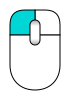
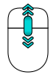
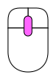
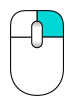
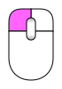
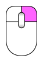
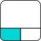
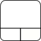
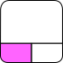

Manual:Navigating in the 3D View/es
- Introducción
- Descubriendo FreeCAD
- Trabajar con FreeCAD
- Guiones en Python
- La comunidad
Una palabra sobre el espacio 3D
Si no tiene ninguna experiencia con aplicaciones de modelado 3D, es fundamental que comprenda algunos conceptos básicos antes de continuar. Si ya tiene experiencia con este tipo de software, puede omitir esta introducción.
FreeCAD opera en un espacio euclídeo tridimensional centrado en un punto de origen definido por tres ejes cartesianos: X, Y y Z. Normalmente, al visualizar FreeCAD desde arriba, el eje X se extiende horizontalmente hacia la derecha, el eje Y hacia atrás y el eje Z verticalmente hacia arriba. El punto de intersección de estos ejes, donde cada coordenada es cero, se conoce como origen de coordenadas.
Cada ubicación en el espacio de FreeCAD se determina mediante las coordenadas del trío (x, y, z). Por ejemplo, un punto ubicado en las coordenadas (2,3,1) se sitúa a 2 unidades del origen, hacia la parte positiva, en el eje X, a 3 unidades del origen, hacia el lado positivo, en el eje Y y a 1 unidad del origen, hacia el lado positivo, en el eje Z. Navegar por este espacio es similar a manipular una cámara. Puede mover la cámara hacia la izquierda, derecha, arriba o abajo (paneo); girarla alrededor del punto focal (rotación) o acercarla o alejarla de los objetos (zoom), lo que le permite explorar su diseño desde diversas perspectivas.
{kind=link}
La vista 3D de FreeCAD
La navegación en la vista 3D de FreeCAD se puede realizar mediante diversos métodos, como el ratón, el Space Navigator, atajos de teclado, el panel táctil o cualquier combinación de estos. FreeCAD ofrece una variedad de estilos de navegación que definen cómo se ejecutan las tres operaciones de visualización fundamentales: desplazamiento, rotación y zoom. Además, estos estilos rigen la selección de objetos en el espacio de trabajo. Para acceder a estos estilos de navegación y cambiar entre ellos, puede ir al editor de preferencias o, simplemente, hacer clic con el botón derecho en la vista 3D. También existe una tercera opción, más inmediata, para modificar el estilo de navegación clicando directamente sobre el icono del ratón de la interfaz de usuario, ubicada en la parte inferior derecha de la pantalla.
{kind=link}
Cada uno de estos estilos asigna diferentes botones del ratón, combinaciones de teclado y ratón o gestos del ratón a estas cuatro operaciones. La siguiente tabla muestra los principales estilos disponibles. Las teclas del teclado y los botones del ratón que se resaltan en magenta deben mantenerse pulsados.
| Style | Select | Zoom | Rotate | Pan |
|---|---|---|---|---|
| Blender |  |
 |
 |
|
| CAD (por defecto) | or Ctrl + Shift +  |
or Ctrl + | ||
| Gesto |  |
 | ||
| Gesto-Maya | or Alt + | Alt + | Alt + | |
| OpenCascade | or Ctr + | or Ctr + | ||
| OpenInventor | Shift + | or |
||
| OpenSCAD | or or Shift + | or |
||
| Revit | or | |||
| Siemens NX introduced in 1.1 |
or |
|||
| SolidWorks introduced in 1.1 |
or Shift + | Ctrl + | ||
| TinkerCAD | ||||
| Panel táctil |  |
Ctrl + Shift +  |
Alt + or Shift +  |
Shift + |
{kind=link}
{kind=link}
{kind=link}
{kind=link}
{kind=link}
{kind=link}
{kind=link}
{kind=link}
{kind=link}
Cabe destacar que, al situar el cursor sobre el menú de estilos de navegación, ubicado en la esquina inferior derecha de la pantalla, aparecerá una información emergente. Esta información proporciona una breve descripción del estilo de navegación seleccionado, ofreciendo una guía inmediata para su uso.
{kind=link}
Como alternativa, algunos controles del teclado siempre están disponibles, independientemente del estilo de navegación:
- Ctrl + y Ctrl + o PgUp y PgDn acercarse o alejarse, respectivamente.
- Las teclas de flecha, , para desplazar la vista hacia la izquierda/derecha y hacia arriba/abajo.
- Shift + and Shift + para rotar la vista 90 grados.
- Las teclas numéricas, , para las siete vistas estándar:
 Isometrico,
Isometrico,  Frontal,
Frontal,  Arriba,
Arriba,  Derecha,
Derecha,  Trasera,
Trasera,  Abajo, and
Abajo, and  Izquierda
Izquierda - VO Configurará la cámara en
 Visión ortográfica.
Visión ortográfica. - Mientras que VP lo establece en
 Visión en perspectiva.
Visión en perspectiva. - Ctrl le permitirá seleccionar más de un objeto o elemento.
{kind=link}
{kind=link}
{kind=link}
{kind=link}
{kind=link}
{kind=link}
{kind=link}
{kind=link}
{kind=link}
{kind=link}
{kind=link}
{kind=link}
{kind=link}
Estos controles también están disponibles en el Menú Vista y algunos en la barra de herramientas Vista.
En la configuración predeterminada, hay un cubo de navegación en la esquina superior derecha de la vista 3D. Este se puede usar para cambiar la vista haciendo clic sobra cada una de las flechas que aparecen rodeando el cubo.
{kind=link}
Al hacer clic en una cara del cubo, la vista se mostrará en esa cara. Al hacer clic en una de las cuatro flechas triangulares, la vista gira 45 grados en la dirección indicada. Al hacer clic en una de las dos flechas curvas, la vista gira 45 grados en la dirección indicada alrededor de una línea que apunta hacia usted. Al hacer clic en el botón redondo en la esquina superior derecha del cubo, la vista gira 180 grados alrededor del eje vertical.
En la parte inferior derecha del cubo de navegación hay un minicubo más pequeño que activa un menú desplegable con varias opciones, incluida una opción para hacer que el cubo sea móvil, lo que le permite moverlo temporalmente a una posición diferente arrastrándolo a esa lugar.
Seleccionar objetos
En la vista 3D, los objetos se pueden seleccionar haciendo clic con el botón del ratón correspondiente, según el estilo de navegación (descritos anteriormente).
- Un solo clic seleccionará el objeto y uno de sus subelementos (arista, cara, vértice).
- Un doble clic seleccionará el objeto y todos sus subelementos.
- Puede seleccionar varios objetos y subelementos, del mismo objeto o de objetos diferentes, pulsando la tecla CTRL (o Cmd en Mac).
- Al hacer clic con el botón de selección en una zona vacía de la vista 3D, se deseleccionará todo.
También se puede activar un panel llamado Vista de selección, disponible en el menú ver, que muestra lo que está seleccionado en ese momento:
{kind=link}
También puede utilizar la Vista de selección para seleccionar objetos buscando un objeto en particular.
Leer más